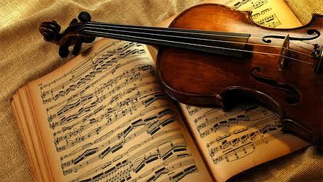

ความรู้พื้นฐานเกี่ยวกับดนตรี
ดนตรีเป็นศิลปะแขนงหนึ่งที่เกิดจากการนำเสียงต่าง ๆ มาจัดเรียงอย่างมีระเบียบ โดยอาศัยองค์ประกอบ เช่น จังหวะ ทำนอง เสียงประสาน และรูปแบบของบทเพลง เพื่อสร้างความไพเราะและสื่อความหมาย ดนตรีมีความเกี่ยวข้องกับชีวิตประจำวันของมนุษย์มาเป็นเวลานาน ตั้งแต่การร้องเพลงเพื่อความบันเทิง การใช้ดนตรีประกอบพิธีกรรม ไปจนถึงการใช้ดนตรีในภาพยนตร์และสื่อบันเทิงต่างๆ ดนตรีมีความสำคัญต่อมนุษย์ทั้งด้านอารมณ์และสังคม เพราะสามารถช่วยสร้างความผ่อนคลาย ถ่ายทอดความรู้สึก และสร้างความสัมพันธ์ระหว่างผู้คน นอกจากนี้ ดนตรียังช่วยส่งเสริมความคิดสร้างสรรค์ สมาธิ และการทำงานร่วมกัน การศึกษาความรู้พื้นฐานเกี่ยวกับดนตรีจึงเป็นสิ่งสำคัญสำหรับผู้ที่ต้องการเข้าใจและพัฒนาทักษะทางดนตรีอย่างถูกต้อง